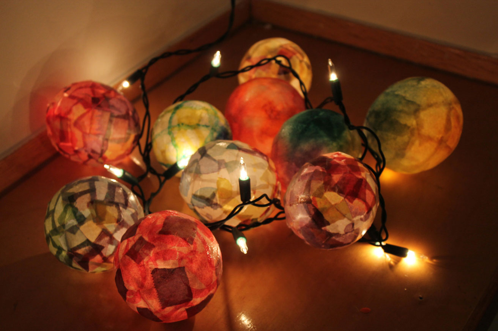

Blog
Here you can have a look to the last posts I wrote, where I show you the things I like, and some DIY tutorials I have created to show you how to create your own home decoration just using recicled materials!
I hope you will like it!
DIY | ALOHA Letters Tutorial
Hello!
I hope you are doing all very well! Me, I’m enjoying the last weeks of summer. During these last months we had the visit of several friends and family coming from Paris :), we moved to our new apartment and we discovered all the wonders that Vancouver offers. And it was great! Now that our first “wave” of visits past, I use my free time to prepare new DIY Tutorials for you and decorate my new HOME SWEET HOME!
And here you have a fresh one! Do you remember I told you not to throw out any cardboard or paper material? Well, I kept my word and I did a new craft to show you how to use this material!
ALOHA Letters DIY Tutorial
.jpg)
Just to follow the GREEN Philosophy we started a few months ago, let me show you a new way to recycle cardboard that we usually find when we buy furniture to be assembled. You don’t need to keep all, but just the pieces that kept in proper conditions.
Why letters? Well, the fact of creating each letter separately allows you to assembly them in a word. I choose ALOHA because I love this word, and because it is a nice way to welcome our visitors at home in a different language than English, Spanish or French. In addition, the letters are so light that you can put them on the wall of your house without needing to drill it. You can create them as bigger or smaller as you want, using different artistic lines (vintage, eclectic, minimalist, modern, hipster…) as you desire. It is completely adaptable to the style of decoration you have in your house.
Even, if you change your mind and finally you want another word, you can change the order or create the missing letters… 🙂
Here I let you the list of materials you will need (almost the same ones I described on my next post Stupinette DIY | Light Globes Tutorial, for the paper-mache technique):
# Cardboard | When you buy a furniture to be assembled (p.e IKEA furniture), usually you have two types of cardboard on the box: A thin one used to build the box and a thicker other that serves to separate and protect each piece inside. This last one is perfect for this craft! It has around 1,5 cm of thickness and it is the best one to obtain three-dimensional letters ;). Instead of that, if you have only the box-cardboard you will need to build your letter to have the same result. It is challenging! Maybe in another post I will show you how to do it.
#Paper | The same one I asked you to store: newspapers, gift wrap, magazines, draws, photocopies… all kind of paper that you like and could be cut and bent easily. In this tutorial I show you the result using a different kind of paper for each letter and I LOVE the result obtained!
# Glue | The one we utilized for school crafts and handmade projects is perfect. Don’t worry about the brand. If it is one with a transparent effect once it dries, better! But this last detail is not mandatory for this craft.
# Foam Brush | I found this one the better tool to apply the glue mix on the paper. But, If you have a big or medium-sized-old brush that you don’t need anymore or you were thinking to throw away, it’s perfect as well!
# Cutter | Scissors or knifes are not very useful to cut cardboard, as it is a hard material and we need to be very precise cutting it (and, indeed, knifes are dangerous… so better to do not use it!). Please, be very careful using this tool to cut the cardboard:
- Protect the spot (table, floor, board, whatever) that you will use to do not damage it,
- Do not open too much your cut,
- Take your time (we are not in a hurry!)
- Close the cutter when you don’t use it, and
- Keep it away from children (if you are a child, ask an adult to help you and utilize this tool)!
SAFETY FIRST!
# Pencil | Just to draw the lines of your letter, that will serve you as a guide to cut the cardboard.
As you can see, we will use the Paper-Mache technique, which is using a mix of 1 part of glue and 2 parts of water to paste the little pieces of paper that will cover the structure (for this craft, cardboard).
Again, the secret of this kind of decoration is using your imagination combining the colors, textures, draws of the paper you choose to obtain creative and original results :).
And here after you will find a tutorial with the steps to follow to do your Letters
I hope you liked it! Share with us your tips and tricks if you find it useful 🙂 All constructive comments are welcomed!
Very soon I will show you new ways to use cardboard and paper to create other kind of decorative goods for your house.
See you in the next post! Take care!
Diana.Diana.
DIY | Light Globes Tutorial
Hi folks!
How are you doing?
Sorry for the delay publishing this new post. Last weeks were very busy and I took more time than I wanted to finish this tutorial. But, it is finally it’s done! 😉
On this post, I will like to show you an activity that I love a lot: create deco things/house goods by yourself using daily material that usually we just throw away once their first utility expires. I think that we can create new great things with all that, that could be really useful for us. By this way, we can provide them a second life, create things that maybe we need or want to have, becoming a little less consumers and, consequently, KEEPING MONEY. And, most important, RECYCLING!!! And, even better, DO SOMETHING CREATIVE AND ORIGINAL, using our own style, for our own benefit!
So, in my opinion, that is just something GREAT! And I hope you will join me on this idea 😉
Light Globes DIY Tutorial

This craft is a great way to create by yourself globe lights recycling the paper you have at home, using the paper mache technique (yes, this one we all learned in the school when we were a child! ;)). You can use it for decorating your house, your Christmas tree, provide of a kind light your hall, bedroom, washroom…
If you have children or you are a teacher, here you have a fabulous activity to learn them. It is very easy and funny to do, so they will just love it!
Before explaining you what material you need, I want to ask you to utilize paper that you could recycle. Let’s keep on the GREEN PHILOSOPHY :), So, If you have some newspapers, magazines, wrapping-paper, gift-wrap or another kind of paper material containing drawings, illustrations, colours or textures that you would like to take advantage of… PLEASE, DO NOT THROW IT AWAY! It is a perfect and amazing material that you can use to create thousands of deco and handmade things!!! And, indeed, you will do a recycling action that is a very good/important thing for our dear MOTHER EARTH! Yes, I insist!
And now, let’s go with the materials you need:
# Paper | As explained, all king of paper that you can cut and adapt easily (cardboard or carton are too hard for this kind of handwork, BUT YOU CAN KEEP IT A PART to the DIY tutorials I will prepare for you :)). Furthermore, If you don’t have this kind of paper, you can use kitchen paper or toilet paper as well and paint it with draws or colours that you like. You are an artist, so FEEL FREE to use the paper you find useful!
# Project Glue | The one we utilized for school crafts and handmade projects is perfect. Don’t worry about the brand. If it is one with a transparent effect once it dries, better! But this last detail is not mandatory for this craft.
# Foam Brush | I found this one the better tool to apply the glue mix on the paper. But, If you have a big or medium-sized-old brush that you don’t need anymore or you were thinking to throw away, it’s perfect as well!
# Water Bombs | I’m meaning those little balloons that children usually use to blow with water to playing on summer. I use those because their size is perfect for this kind of globes. You will have to poke them to finish this craft, so if you don’t need to use them after you can utilize bigger one if you have it already at home ;). For those on a medium or big size, you will need to blow the balloon less to have the size of globe desired.
# Mini lights | I mean the kind of little lights we use to buy for Christmas decoration or tree. I use to utilize the white ones because the paper I have has already lots of colours, but you can choose the colour lights model if you want :). The only fact you have to keep in mind is the colour of your paper. If it is white, colour lights will provide a great effect! Besides, the number of lights you have to choose depend of the number of globes you want to create, of course!
# A Dry Hair (optional) | Just to dry faster the glue. BUT, be careful using that because the balloon grow his size if you warm a lot the air contained inside, and it will broke the paper, deform or separate the pieces you pasted before. So think about using this on a medium/cold temperature, and not for a long time, in order to do not damage the great work you did before!
And then, you just need use your imagination mixing the pieces of paper, choosing the colours and a little of patience to allow glue dry completely (VERY IMPORTANT :)).
Here I let you a tutorial explaining all the steps you need to follow to create your own globe lights.
I hope you will find it useful and you will like it! Send me photos if you want to share your creations in this blog!
You could find very soon the rest of tutorials that I will prepare on Stupinette DIY section, and follow me as well on Pinterest :).
If you have any question, suggestion or something to say about it, please contact me or leave your comment here after!
Thanks again for reading me!
Have a great day 🙂
Diana.
Watercolour
Hello everybody!
How are you? I hope you are very well!
It has been a while since the last time I wrote! I have been really busy all these last months so I couldn't find time to write a new post. But well, here I am again!
This time I am going to provide you a few links about watercolour painting, that I have found very usefull to learn more about this type of painting and to knoledge the basics to start painting with watercolour.
Watercolour painting
First of all, I will just to let you know that I am a completelly beginner on painting, and I just learned some techniques using watercolour a year ago. I live in Vancouver BC, so I have attended a few workshops at the art supply shop DeSerres. If you live in the same area and you will like to learn about how watercolour techniques, here you have the link to the two locations at Vancouver:
Also, I recommend you to search in Youtube artist's video-tutorials that show you the workflow while they a painting wiht watercolours. Here I give you a few links:
I am preparing a selection of pictures I took from paintings that I have done to show you my evolution.
I will write a new post to show you each painting and to explain you what are the techniques I used.
I am looking forward to show more about this!
See you in the next post!
Diana.